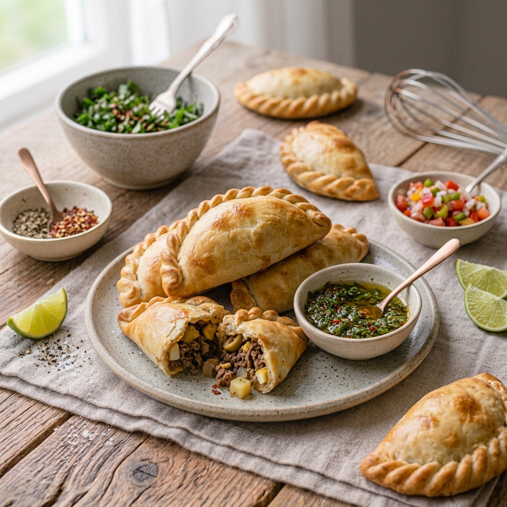

RECETA #026
Empanadas Criollas

Ingredientes
Rinde 12 porciones.
Para la masa:
- 500 g de harina de trigo
- 30 g de levadura seca
- 1 cda. de azúcar
- 1 pizca de sal
- 100 g de mantequilla
- 2 huevos
- 100 ml de agua
Para el relleno:
- 300 g de jamón
- 300 g de queso manchego
Para barnizar:
- 1 huevo
Procedimiento
Realiza el mise en place.
En una cacerola chica entibia el agua para hidratar la levadura y mezcla con el azúcar. Cierne la harina y realiza una fuente; por la parte de afuera de la fuente agrega la pizca de sal. Coloca en el centro de la fuente el resto de los ingredientes junto con la levadura hidratada. Amasa e integra bien hasta tener una masa homogénea.
Coloca la masa en un bowl previamente engrasado con aceite vegetal y cúbrelo con plástico. Llévalo cerca de una fuente de calor para fermentar hasta que duplique su tamaño.
Corta el jamón en bastones y ralla el queso; reserva. Enharina la mesa de trabajo y estira la masa con un rodillo; con un cortador redondo realiza las piezas. Rellena con el jamón y queso. En la orilla, remoja con huevo y haz los dobleces para sellar la empanada.
Enharina la charola para hornear. Coloca las empanadas con una separación de 2 cm entre cada una. Hornea a 180 °C por 20 minutos o hasta que estén cocidas.
Emplata y acompaña con la salsa de tu preferencia o aderezo.
Tiempo de preparación: 60 minutos.